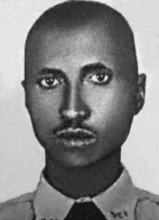

Pedro
Domiense
de Oliveira
CIRCUNSTÂNCIAS DA MORTE
Pedro Domiense de Oliveira morreu no dia 7 de maio de 1964, após ter sido preso no dia 04 do mesmo mês, enquanto funcionário da Diretoria dos Correios da Bahia, por autoridades do Quartel General da 6a Região Militar, em uma operação realizada em doze municípios da Bahia, no intuito de buscar pessoas suspeitas de envolvimento com atividades políticas contrárias ao regime militar. Segundo sua esposa, Pedro foi denunciado pelo diretor dos Correios, João Maximiano dos Santos, que o identificou como sendo membro do PCB.
No mesmo dia, foi encaminhando para interrogatório no quartel da 6a Região Militar. Quando de sua prisão, disse à esposa: “vá para casa e tome conta dos nossos filhos, pois eu não volto mais”. Ao chegar em casa, Maria de Lourdes deparou-se com uma escolta do Exército, que lhe aguardava para obter mais informações. Sem um mandado de busca e apreensão, retornaram armados, às duas horas da madrugada, quando invadiram a casa e destruíram tudo a procura de provas que incriminassem Pedro.
No dia seguinte, 6 de maio, sua esposa foi avisada por um ambulante de que tinha visto Pedro Domiense agonizando, nas proximidades da Base Aérea de Salvador. Maria de Lourdes encontrou Pedro quase sem vida. Em seguida, levou-o até a Base Aérea, de onde seu corpo foi escoltado até o quartel da 6a Região Militar e, na sequência, para o Pronto Socorro, local do seu falecimento.
No seu atestado de óbito consta que Pedro faleceu no Hospital Getúlio Vargas, no dia 7 de maio de 1964. Segundo o laudo da necropsia, Pedro teria se suicidado, por meio da ingestão de um veneno, sendo sua morte ocasionada por “intoxicação aguda exógena”.
A versão oficial foi desmentida pelo testemunho de Washington José de Souza, no livro Direito à memória e à verdade que denunciou as torturas sofridas por Pedro Domiense na 6ª Região Militar. Seu corpo foi sepultado no cemitério Quintas dos Lázaros – Salvador (BA).
Pedro Domiense de Oliveira died on May 7, 1964, after being arrested on the 4th of the same month, as an employee of the Bahia Post Office, by authorities from the General Headquarters of the 6th Military Region, in an operation carried out in twelve municipalities in Bahia, with the aim of searching for people suspected of involvement in political activities contrary to the military regime. According to his wife, Pedro was denounced by the director of the Post Office, João Maximiano dos Santos, who identified him as a member of the PCB.
On the same day, he was sent for interrogation at the barracks of the 6th Military Region. When he was arrested, he told his wife: “go home and take care of our children, because I’m not coming back.” Upon arriving home, Maria de Lourdes found an Army escort, who was waiting for her to obtain more information. Without a search and seizure warrant, they returned armed at two o'clock in the morning, when they invaded the house and destroyed everything in search of evidence that incriminated Pedro.
The following day, May 6, his wife was informed by a street vendor that she had seen Pedro Domiense in agony, near the Salvador Air Base. Maria de Lourdes found Pedro almost lifeless. He then took him to the Air Base, from where his body was escorted to the barracks of the 6th Military Region and, subsequently, to the Emergency Room, where he died.
His death certificate states that Pedro died at Getúlio Vargas Hospital, on May 7, 1964. According to the autopsy report, Pedro committed suicide by ingesting a poison, with his death being caused by “acute exogenous intoxication”.
The official version was refuted by the testimony of Washington José de Souza, in the book Right to Memory and Truth, which denounced the torture suffered by Pedro Domiense in the 6th Military Region. His body was buried in the Quintas dos Lázaros cemetery – Salvador (BA).
Pedro Domiense de Oliveira falleció el 7 de mayo de 1964, tras ser detenido el día 4 del mismo mes, como empleado del Correo de Bahía, por autoridades del Cuartel General de la VI Región Militar, en un operativo realizado en doce municipios de Bahía, con el objetivo de buscar personas sospechosas de participar en actividades políticas contrarias al régimen militar. Según su esposa, Pedro fue denunciado por el director de Correos, João Maximiano dos Santos, quien lo identificó como miembro del PCB.
Ese mismo día fue enviado para ser interrogado al cuartel de la VI Región Militar. Cuando lo arrestaron le dijo a su esposa: “vete a casa y cuida a nuestros hijos, porque no voy a volver”. Al llegar a casa, María de Lourdes encontró una escolta del Ejército, que la esperaba para obtener más información. Sin orden de registro e incautación, regresaron armados a las dos de la madrugada, cuando invadieron la casa y destruyeron todo en busca de pruebas que incriminaran a Pedro.
Al día siguiente, 6 de mayo, su esposa fue informada por un vendedor ambulante que había visto a Pedro Domiense en agonía, cerca de la Base Aérea de Salvador. María de Lourdes encontró a Pedro casi sin vida. Luego lo trasladó a la Base Aérea, desde donde su cuerpo fue escoltado hasta el cuartel de la VI Región Militar y, posteriormente, al Servicio de Emergencias, donde falleció.
Su certificado de defunción indica que Pedro falleció en el Hospital Getúlio Vargas, el 7 de mayo de 1964. Según el informe de la autopsia, Pedro se suicidó ingiriendo un veneno, siendo su muerte causada por “intoxicación exógena aguda”.
La versión oficial fue desmentida por el testimonio de Washington José de Souza, en el libro Derecho a la Memoria y a la Verdad, que denunció las torturas sufridas por Pedro Domiense en la VI Región Militar. Su cuerpo fue enterrado en el cementerio de Quintas dos Lázaros – Salvador (BA).